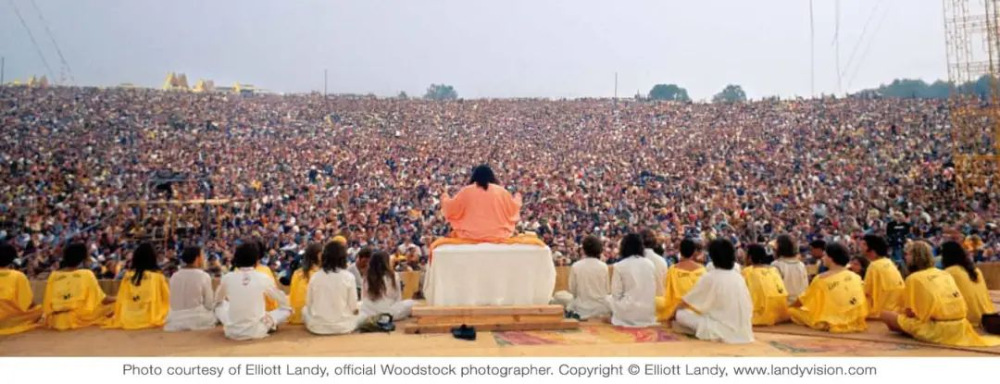

「在纽约这个喧嚣的城市里，我想找地方静下心来。」
作者：刘果，Matters Lab Co-founder；要改变某些事物，就需要建立一个新模型，让现有的模型过时。(本文获作者授权转载)
这城市活色生香，也躁动不安。钢筋丛林里的高楼一望无际，高楼下人流匆匆。追逐梦想的年轻人们来了又去，车水马龙昼夜不息。角落里精神失常的人们，欲望烤干了躯壳，双眼空洞浑浊。
纽约又是如此的丰富。不同语言、不同信仰的人们擦肩而过，在街头和公园无心相遇，来自世界各地的因缘汇聚。无数个平行世界，交织在贪嗔痴慢疑中，如花朵般盛开，又如花朵般凋谢。五十年前集会的照片已经泛黄，五十年后的华盛顿广场依旧活力四射。
孔子说“君子慎独”，帕斯卡尔说“人类的麻烦都源于无法独自安坐一室”。我一直有打坐的习惯，但在喧闹的中心，还是难以定下心来。既然没法独自安坐，那就走出门去，看看这无数平行世界折而成的城市里，其他人找到了什么样的路。
这个念头打开了通往新世界的大门。我开始在地图上搜索，许多跳出来的地方，都有我熟悉的名字。原来那些曾经读到过的人、故事、和观念，都在延续着，在身边生长和变化着。种种源自东方的修行方式，近半个世纪里扎根美国，并且在充满活力地继续传播。
二战后，对现状失望的美国年轻人们，开始寻找物质追求之外的可能。禅宗的许多概念，经日本学者铃木大拙的西化之后，在这“垮掉一代”中流行开来，频繁出现在《达摩流浪者》这样的作品里。
同时，美国社会发现了 LSD 和迷幻蘑菇，许多人借此经历了直接的宗教体验。人们开始质疑政治权威与权力塑造的叙事，叩问更深层次的现实，却不知如何理解超越日常的心智状态。
地球另一端的亚洲，爆发了越南战争。美国支持下的南越政府支持天主教、打压佛教，德高望重的释一行禅师被迫流亡海外。于是他定居法国，建立梅村中心，将“正念”等概念普及到英文世界。他的流亡将入世佛教传遍世界，也将冥想变成了普通人也能习得的技巧。
此时北边的中国，解放军进军西藏。达赖喇嘛与北京政府合作失败，流亡印度。跟随达赖穿越喜马拉雅山脉的，还有许多完成了传统教育的年轻活佛，借机进入英国大学深造。被迫出走的种子们撒向欧美各地，遍地开花。
越战的血腥战况传回美国，那些原本就质疑权威的人们，难以接受自己国家的暴行。反文化运动与致幻剂相伴相生，席卷全国。年轻人们流浪到印度寻找信仰，有的遇到了藏传佛教，有的遇到了印度教。
经过了英国的殖民，印度教种类繁多的灵修道路，已经开始了西化与现代化，准备好接纳这批精神难民。美国年轻人们找到了离开药物继续修行的办法，又将这些种子带回国，不断成长、裂变。梵文咒语开始出现在流行音乐里，瑜伽也逐渐变成了都市生活的一部分。
这些诸多流派，都有共同的根源，都让人安住于“法”（dharma）而获得解脱，也都让修行者获得直接的宗教体验。它们几千年来不断地分支和裂变，途经南亚、东亚和东南亚，又在这无神论的时代，汇聚在眼前这小小的曼哈顿岛。它们化作寺庙、瑜伽馆、文化中心等各种形式，坐落在我身边的步行范围内，继续裂变和融合着。
于是我决定，在纽约开始一场环球旅行，探访诸法门。
从伍德斯托克，到整体瑜伽中心
01
格林威治村，曼哈顿岛的东南部，我在找一个叫整体瑜伽中心（Integral Yoga Institute）的地方。
这里曾是垮掉一代和嬉皮士运动的中心，现在已经贵得让普通人望而却步。不过，当年进步、多元、自由等理念还是留下了深深的烙印。旁边的基督教堂，不介绍教宗、教义，主打激进与包容；对面的 LGBT 社区中心，在艾滋病刚传入美国、反同情绪高涨的八十年代建立，帮助受到威胁的性少数群体。
熙熙攘攘的人流中，整体瑜伽中心坐落在一座红色的门后。门边的墙上画着一朵莲花，每朵花瓣上有基督教、伊斯兰教、道教、神道教等宗教的符号，上下有文字：“ TRUTH IS ONE, PATHS ARE MANY（真理一种，道路许多）”。一进门是个小商店，红黄色调。四周书架摆满书，玻璃柜里陈列着精巧繁复的饰品，色彩斑斓。
玻璃柜后的工作人员，是一位看起来六十出头的瘦削女性。我与她问好，向她说明我来参加冥想练习。她指引我去四楼的“家庭房间”，午间冥想会在那进行。
我沿着楼梯一步步往上走，墙上有创始人萨其达南达的画像，也有中国山水画等其他灵动的画作。推开四楼的门，一边是一个公共厨房，而另一边是个小小的客厅。客厅里，一整面墙都是玻璃窗，阳光透过玻璃洒满一地。看起来，午间冥想会是在这里了。
房间里有三个人在闲聊，相互之间看起来颇为熟络。三人分别是欧裔、亚裔与非裔，年长的约莫七十多岁，年轻的也有五十多，精神矍铄。
我脱鞋进门，与三人打招呼致意，年长的一位向我介绍冥想的流程：唱诵祷词，呼吸练习，和静坐。看起来，我是唯一一个新来的，其他的人都是这里的老师和常客。一个大姐故作严肃地打趣，然后我们还要立血誓。我笑道，不过我的血剩得不多了。
快到时间，另一位看上去七十多岁、但充满活力的老者匆匆进来，跟大家说附近哪里因为新冠病例停止营业，于是一屋子人聊开了。末了，他转过头，充满歉意地跟我说，抱歉让我第一次来就听这些烦心事。
这里是纽约最早的瑜伽馆之一。瑜伽已经成为都市年轻人生活的一部分，在健身房与攀岩馆里遍地开花。但今天这里的午间冥想，却只有我一个年轻人。
历史上“瑜伽”主要指不同形式的冥想。“瑜伽”在梵语中意为“结合”，引申为梵我合一和解脱。通往“梵我合一”的道路有许多，整体瑜伽试图整合的“整体”便有哈他瑜伽（Hatha）、打坐冥想（Raja）、信爱（Bhakti）、正业（Karma）、正见（Jnana）、诵经（Japa）六种。
现在流行开来、侧重肢体运动的瑜伽，则是哈他瑜伽，在梵文中意为“力量”。哈他瑜伽在美国的传播中，逐渐脱离了原本的宗教和哲学背景，与健身文化相结合，变成了一种常见的健身方式。冥想也经历了类似的去宗教过程、成为普通人理解身心的技巧，不过不像瑜伽一样融入了健身文化，仍然没那么常见。
而整体瑜伽中心，作为瑜伽在美国的发源地之一，是少数保留了瑜伽传统的地方。
02
一九六六年，上海长大的纽约画家彼得·马克斯，在巴黎偶遇了印度瑜伽行者萨其达南达。萨其达南达在妻子去世后，周游印度寻找解脱，先后师从圣哲奥罗宾多、上师拉玛那·玛哈希，最后在上师希瓦南达门下出家。遇到彼得时，五十二岁的萨其达南达已经修行二十多年。
几天前，还在纽约的彼得已经梦见过这位身材高大、眼神清澈、发须俊美的长者。相遇之后，彼得感受到一种强烈的平静。几天时间里，彼得向萨其达南达学了一些瑜伽体式，并一次次惊讶于他言谈间的从容与智慧。彼得说服萨其达南前往美国，“美国真的需要你”。
萨其达南来到纽约，一脚踏入了反文化运动的中心。见证了越战的血腥、经历了致幻药物启迪的美国年轻人，思考存在的意义，向往灵性的世界。致幻药物能够让人经历短暂的自我消解，而印度教正是关于自我的消解，及消解后的觉悟。萨其达南带来的哲学体系与瑜伽练习，久旱逢甘霖般受到年轻人的欢迎，迅速传播开来。
三年后，纽约北边的小镇伍德斯托克，一群人开始筹备音乐节。主办方算是有些经验，组织过两三万人的活动。但陆续到达的人们越来越多，最终接近五十万人，成为了历史上最大的音乐节。主办方慌了手脚，不知道怎么稳住洪水一般增多的人群。他们找来了彼得·马斯克，彼得说，那请萨其达南达上师来吧。
于是，在伍德斯托克音乐节的开幕式，萨其达南达乘坐直升机空降舞台。他在舞台上盘腿安坐，告诉人们，美国已经在物质领域帮助了世界，现在是时候在灵性领域帮助世界了。“人们喊道‘为和平而战’，但我不明白，他们要如何在战斗之后找到和平。所以，让我们别去为和平而战，先在内心找到和平吧。“最后，他带领几十万美国年轻人唱诵梵文祷词，歌颂守护之神毗湿奴。

伍德斯托克音乐节之后，萨其达南达创办的流派“整体瑜伽”在美国遍地开花，倡导一种灵性的生活方式。其中就包括纽约整体瑜伽中心。最开始，整体瑜伽中心在隔壁开了一间有机素食商店。二零零八年，商店决定关门，门上写着“任务完成”。因为如今有机食品与素食已经随处可见，并不需要专门开一家商店了。
而今，瑜伽课程也已经随处可见。我不禁好奇，整体瑜伽中心是否也完成了自己的任务。
03
我环顾四周，洒满阳光的房间里，一面是一张长沙发，对面则是一座神龛，供奉着萨其达南达与希瓦南达的照片。神龛下方的盒子里有一双旧凉鞋，想必是萨其南达生前穿过的。正对窗户的墙上是一排书架，上面有不同宗教与信仰相关的书籍，伊斯兰教、犹太教等等。
这许许多多对上师形象的供奉，让我感觉有些别扭。我不由得想起伊斯兰教禁止偶像崇拜的教义，觉得有几分道理的。不过要进入入定的状态，是需要信念的，于是我放掉这些判断和质疑的念头，让它们逐渐散掉。
时间到了，屋子里的人们朝向神龛坐定，有的在沙发上，有的在地下，最后进来的老者莲花式盘腿，坐在我旁边。刚才开玩笑的大姐缓缓地吟出“唵”，示意午间冥想的开始。
众人开始吟诵祷文，一遍梵文一遍英文。吟诵的曲式平静低沉，在充满阳光的木屋中回荡。我不熟悉祷文，只得大致以声相合。祷文大意如下：
唵 唵 唵
唵 融入源泉
瑜伽行者永恒的居所
愿望与解脱的施者
敬意致以这宇宙的大智慧你是我的母亲，我的父亲是你
你是我的亲人，我的朋友是你
你是我的知识，我的财富是你
你是我的所有，众光之光是你
吟诵之后是呼吸练习。先是 Kapālabhātī，中文作“头颅光明呼吸法”或“火焰之吸”，以腹肌快速呼气，而后自然吸气；再是 Nadi Suddhi，中文作“交替呼吸法”或“净脉呼吸法”，轮流以一只鼻孔吸气、另一只鼻孔呼气，同时察觉和平衡身体两侧的差异。这些呼吸练习源于印度教与佛教中脉轮的概念，意在激活生命力，让人更容易进入冥想的状态。
呼吸练习之后，便是二十分钟的冥想。我放慢呼吸，沉入内心。也许是许久没有打坐，也许是还不习惯与其他人一起，这二十分钟似乎比平时更加漫长。杂念纷纷涌起，再如雪花纷纷落下。心如波动的海，不断泛起浪花，浪花一朵朵消融，海面慢慢沉静。我时而闭眼沉入内心，时而睁开眼睛融入四周的环境，融汇在众人入定时涌起的场域。我的脚踝在硬木地板上有些疼，让我时不时需要更换姿势，同时不断想起下次需要多拿一个垫子。周围的人们一动不动，没有声音。
徐徐的“唵”打破宁静，提示大家时间到了。众人起身，对神龛合掌致谢，领头大姐从神龛上拿起一盏灯，向众人赐福。放回灯，与众人吟唱结束祷词，低沉的合声再次在房间中回荡：
吉祥降于众生
平静降于众生
圆满降于众生
繁荣降于众生幸福降于众生
健康将于众生
愿众生在彼此间见善
愿众生解脱苦难愿整个宇宙充满和平与喜乐
爱与光
愿真理之光克服一切黑暗
胜利属于这光
我放慢动作，有意在结束时维系住这半小时换来的平静，慢慢将坐垫放回原位，与众人一同向外走。
在门口穿鞋时，那位一开始告诉我流程的长者，向我一一介绍一同冥想的人的名字。他们的名字均以 Swaimi 开头，梵文中对出家人的尊称。我试图记住，但对梵文发音不够熟悉，又很快忘记了。长者欢迎我再来，同时告诉我每天六点还有一个清晨冥想，并未对外公开，但也欢迎我参加。之前开玩笑的大姐继续着之前的梗说，我们还要拿新人献祭的呢。不过我们周三不献祭，长者接过玩笑说。我还剩下七条命呢，我也笑道。长者继续问起我的平常的冥想方式、对瑜伽的经验等，提到一些整体瑜伽中常用的方法，并欢迎我下次再来。
我道过谢后，沿着楼梯往外走，试图每一步都充满觉知。我试图记住不去追逐开始涌起的各种念头，让这半小时打开的感知和敏锐不被掩盖。
出门，一头扎进了曼哈顿熙熙攘攘的人流。阳光分外明媚，空气分外清洌。我投向世界的目光似乎有了更多的善意。而不管是行人的眼神，还是阳光空气，似乎也以更友善的目光相迴。
原文与持续更新：https://matters.town/@guo/collections/Q29sbGVjdGlvbjoyOTk0